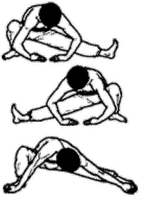

Журавль тянется к ноге

Исходное положение: Стоим, ноги шире плеч, ступни параллельны. Полностью садимся на правую ногу, левая выпрямлена, пальцы направлены вверх. Правым плечом изнутри упираемся в колено. Для сохранения равновесия можно руками касаться пола.
Переносим вес тела на левую ногу, правую распрямляем и разворачиваем носком вверх. Повторяем упражнение 4 раза.
Затем выполняем то же упражнение, не отрывая стопу распрямленной ноги от пола. Ступни ног должны быть параллельны, руками прижимаем подъемы стоп к полу. Повторяем 4 раза.
Эта поза напоминает цаплю, прижимающую лапкой рыбу и достающую ее клювом. При переносе веса тела с ноги на ногу старайтесь не подниматься, а выполнять упражнение в максимально низком положении. Стопу ноги, на которой сидим, не отрывайте от пола.
Next up: Соединитесь с землей